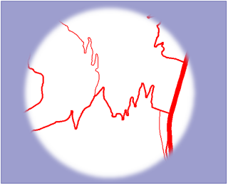
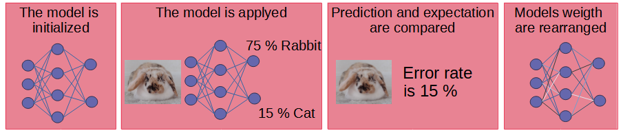
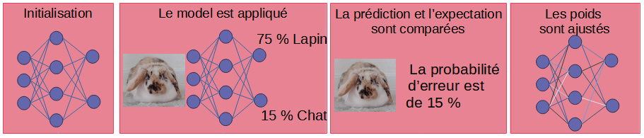

Azelle Courtial
73 avenue de Paris · 94165 Saint-Mandé CEDEX ·
azelle.courtial@ign.fr
PhD student in geographic information sciences, since October 2019.
Doctorante en généralisation cartographique, depuis octobre 2019.
Research Interests
Sujets de recherche
The goal of my thesis is to explore the potential of deep learning for map generalisation.
L'objectif de ma thèse est d'explorer les possibilités offertes par les techniques d'appprentissage profond pour la généralisation cartographique.
Map generalization
Généralisation cartographique

La généralisation cartographique correspond à l'adaptation d'un jeu de données géographiques détaillées pour réaliser une carte à plus petite échelle. Le changement d'échelle implique le grossissement des éléments sur la carte et donc la diminution de l'espace disponible,il est alors nécessaire de simplifier ou sélectionner l'information géographique représentée. L'automatisation de la généralisation cartographique est un sujet de recherche important, il existe de nombreux operateurs de généralisation et des méthodes d'orchestration de ces algorithmes, l'automatisation complète de ces processus n'est cepandant pas encore possible. Je penses que l'utilisation de techniques d'apprentissage profond pourrait contribuer à la recherche pour cette discipline. Au cours de ma thèse j'ai à la fois traité l'apprentissage d'opérations individuelles (sélection du réseau routier, détection d'alignement, simplification des formes de routes de montagne) et expérimenté une approche globale de génération de cartes généralisée au 1:50 000.
Map generalisation is the adaptation of a set of detailed geographical data to produce a map at a smaller scale. The change of scale involve a reduction of the available space, it is then necessary to simplify or select the geographical information presented. The automation of cartographic generalization is an important research subject, and despite many generalization operators and methods of orchestration, complete automation has not yet been achieved. I believe that the use of deep learning could provide be profitable to research on the automation of map generalisation . During my thesis I have both dealt with the learning of individual operations (selection of the road network, detection of alignment, simplification of the shapes of mountain roads) and experimented a global approach to generate a generalized map at 1 :50,000.
Deep learning
Apprentissage profond


L'apprentissage profond fait partie des technique dites d'itelligence artificielle, dont le but est de simulé l'intelligence humaine pour résoudre une tâche de gestion de données. Pour cela l'apprentissage profond se base sur un macanisme d'apprentissage c'est à dire que plutot que d'étre programée explicitement pour resoudre la tâche la machine, va plutot aprendre à partir d'exemple. Le principe est le suivant : le model est définie avec un certain architecture et des poids aléatoire. Ce modele est appliqué aux données du jeu d'entrainemnt. On compare la prediction avec le resultat attendu. On optimise les poid pour minimiser la difference entre prediction et cible. Le processus est répété jusqu'à obtenir uns stabilisation et/ou un résultat satisfaisant. Les principaux facteur d'amélioration d'un model de deep learning sont l'amélioration du jeu d'entrainement , de l'architecute du model d'apprentissage et de la fonction d'objectif (la comparaison entre la prediction et la cible). Au cours de ma thèse j'ai pu aborder le fonctionnement de ces trois aspects en vu de construire un model capable de généralisation cartographique.
Deep learning techniques belong to artifiacle intelligence techniccs that aims to reproduce humain itelligence to solve data managment task. DL is base on learning mechanisim, indeed instead of programing algorithm explicitly for a task, we rather learn from exemple. The principle is the following : model is define with a certain architecture and with random weigth. this model is apply to input data and the prediction is compared with the exepted results. Then the algorythm optimize the weigth to minimize the difference . this process is repeated until obtaining a steady and correct results. The main improvement isssues for this kind of model are the improvement of example set, of the architecture, and of the comparison (loss function). During my thesis I dealt with these tree issues in order to construct a model adapted to do map generalisation.
News
Participation at IGN research day.
I will present my work entitled "Usage of vector spatial data in image-based deep learning models" Thursday, March 31 at 4:50 p.m., a video recording is planned.
Participation à la journée de la recherche de l'IGN.
Je présenterais mon travail "Utilisation de données spatiales vectorielles dans les modèles d'apprentissage profond basés sur des images" le jeudi 31 mars à 16h50, une captation video est prévue.
Je présenterais mon travail "Utilisation de données spatiales vectorielles dans les modèles d'apprentissage profond basés sur des images" le jeudi 31 mars à 16h50, une captation video est prévue.
March 2022
Mars 2022
Participation at EGC conference.
I presented my work about representing and combining spatial data for deep learning at the workshop on spatial and temporal data managment and analysis.
Participation à la conférence EGC.
J'ai participé à l'atelier gestion et analyse de données spatio-temporelles de la conférences, j'y présente l'article : "Représentation et combinaison de l'information géographique pour l'apprentissage profond".
J'ai participé à l'atelier gestion et analyse de données spatio-temporelles de la conférences, j'y présente l'article : "Représentation et combinaison de l'information géographique pour l'apprentissage profond".
January 2022
Janvier 2022
Participation at ICC 2021.
I presented my work titled "Can Graph Convolutional Network Learn Spatial Relations ?" during the conference.
I took part to the Pre-Conference Workshop 24th ICA Workshop on Map Generalisation and Multiple Representation and proposed A Benchmark for Deep Learning-Based Generalisation - AlpineBends.
Participation à la conférence ICC 2021.
J'ai présenté mon travail "Can Graph Convolutional Network Learn Spatial Relations ?".
J'ai participé à l'atelier Pre-Conference Workshop 24th ICA Workshop on Map Generalisation and Multiple Representation et j'ai proposé un benchmark pour la généralisation de routes de montagne - AlpineBends.
I took part to the Pre-Conference Workshop 24th ICA Workshop on Map Generalisation and Multiple Representation and proposed A Benchmark for Deep Learning-Based Generalisation - AlpineBends.
J'ai présenté mon travail "Can Graph Convolutional Network Learn Spatial Relations ?".
J'ai participé à l'atelier Pre-Conference Workshop 24th ICA Workshop on Map Generalisation and Multiple Representation et j'ai proposé un benchmark pour la généralisation de routes de montagne - AlpineBends.
J'ai participé à l'atelier Pre-Conference Workshop 24th ICA Workshop on Map Generalisation and Multiple Representation et j'ai proposé un benchmark pour la généralisation de routes de montagne - AlpineBends.
December 2021
Decembre 2021
Survey on evaluation of mountain road generalisation.
The survey is now closed, thank you for your participation. The results will be includ in a future publication.
Sondage sur l'évaluation de la généralisation des routes de montagne.
L'enquete est maintenant terminée, merci de votre participation. Les resultat seront inclus dans une future publication.
L'enquete est maintenant terminée, merci de votre participation. Les resultat seront inclus dans une future publication.
September 2020
Education
Université Paris-Est
PhD in Geographical Information Sciences
October 2019 - Now
Université Paris-Est, ENSG
Master in Geographical Information Sciences, spatial analysis and remote sensing
September 2017 - September 2019
Université Paris 7-Diderot
Licence in Mathematic and Informatic applied to social sciences
September 2014 - September 2017
Publications
[ACL] Journals
[ACLN] Journals
[ASCL] Others
[ACTI] Conferences
[ACTN] Conferences
[COM] Conferences
[OS] Books and Chapters
[DO] Books and Chapters
[AFF] Posters
[AP] Preprints
[TH] Dissertations
[INV] Invited Talks
[PV] Popularization
Ressources
Poster and slides
Can graph convolution network learn spatial relations ?
Slides à la conférence ICC, Decembre 2021.
Can graph convolution network learn spatial relations ?
Slides at ICC conference, December 2021.
Apprendre à combiner l'information géographique pour générer une carte généralisée
Poster pour la conférence francophone sur l'extraction et la gestion des connaissances, January 2022.
Learn to combine geographic information to generate a generalized map
Poster for EGC conference (in French), January 2022.
Apprendre à générer des extraits de carte généralisée d'espaces urbains
Poster pour les journées de la recherche de l'IGN, Mai 2021.
Learn to generate extract of generalized map in urban area
Poster for IGN research day (in French), May 2021.
Généralisation des routes de montagne par apprentissage profond
Poster pour les journées de la recherche de l'IGN, Octobre 2020, Généralisation des routes de montagne par apprentissage profond.
Generalization of mountain roads using deep learning
Poster for IGN research day (in French), October 2020, Generalization of mountain road using Deep learning ?
Videos
Presentation at ICA Workshop on Map Generalisation and Multiple Representation, Nov 2020.
Constraint Based Evaluation of Generalized Images Generated by Deep Learning.
Présentation au workshop ICA sur la généralisation cartographique et les représentation multiples, Novembre 2020 (en Anglais).
Evaluation d'images généralisées par apprentissage profond, basée sur des contraintes.
How to generate map looking images ?
Poster video presentation (in French).
Vidéo de presentation du poster :
Apprendre à générer des images qui ressemblent à des cartes.
Montain roads generalisation by deep learning.
Poster video presentation (in French).
Vidéo de presentation du poster :
Généralisation des routes de montagne par apprentissage profond.
Teaching
Enseignement
En 2021 et 2022 : Analyse spatiale, Ingénieur année 2, ENSG, 9 heures, TP uniquement.
En 2020 et 2021 : Introduction à la programmation Python, Géomètre, ENSG, 40 heures, cours et TP.
En 2020 et 2021 : Initiation aux SIG, M1 Geom, ENSG, 18 heures, cours et TP.
En 2020 : Tutorat de projet, LPro, ENSG, 18 heures.
En 2019 : ArcGIS training, MS PDM, ENSG, 15 heures, cours et TP.